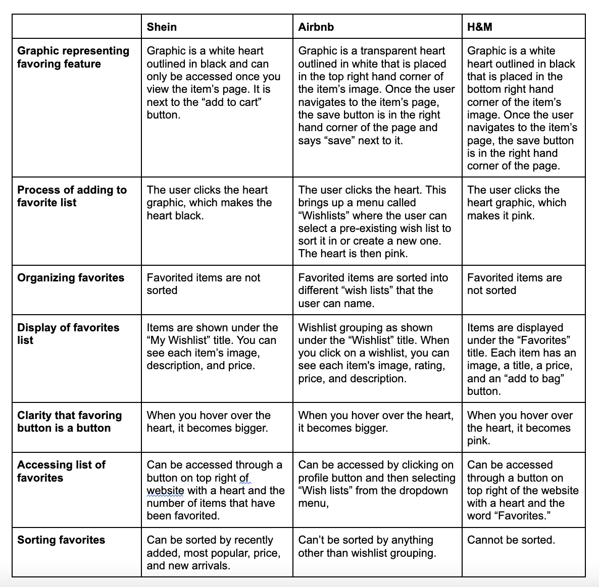
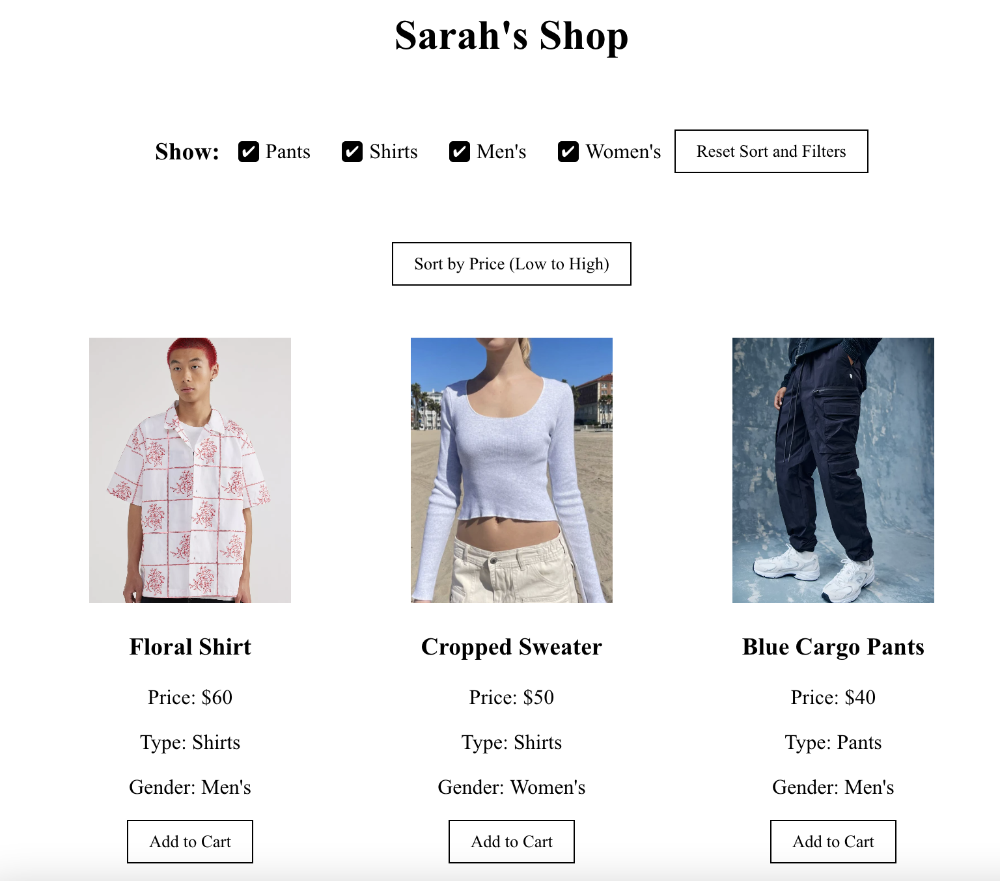

Overview
For this project, I was assigned to develop an interactive interface, use interface components, and tie the components to an internal data state. Using reach, I made a mock shopping webpage where users can scroll through clothes, filter them, sort them, and add them to a cart.
Competitive Analysis
Before I began coding, I selected three different websites with a favoriting function to examine. This was to provide inspiration for my aggregating feature, which I ended up creating in the form of a shopping cart.
The three websites I chose were Shein, Airbnb, and H&M. Here is a competitive comparison chart of my findings:
The Airbnb favoring function was a little more complex than the other websites’ favoring function. This makes sense because the website is dedicated to finding housing, which requires more nuance than just clothing. It makes sense that one would need to sort the Airbnb’s in their wishlist, based on factors such as location and size. However, I did find accessing Airbnb’s wishlist to be less intuitive than the other two websites. While someone is browsing clothing on Shein and H&M, the button that leads to the favorites list is visible the entire time. Users are more likely to know the button exists. Meanwhile, with Airbnb, you have to navigate to a drop down menu to find it, meaning users might not ever be aware there is a wishlist.
Shein and Airbnb’s websites were very successful in encouraging users to add many items to their favorites list/wishlist. Shein does this by allowing users to sort their swishlist by recently added, most popular, price, and new arrivals. Airbnb does this by allowing users to sort their items into categories the users get to name. Meanwhile, none of these features exist for the H&M favoriting page. This might make it hard for users to browse through a large wishlist.
Based on these websites, there are a few features I attempted to implement for my website. First, when creating my buttons, I added a hovering feature that distinguishes buttons from non-buttons. Creating a visible change when users hover over buttons makes it clear that a button is a button. For my website, when users hover over the buttons, they turn from black to gray. I will liked the aesthetic of the white buttons outlined in black used by all three websites, so I used that as well.
I will also add a button that sorts items by low to high price, like Shein does with their Favorites page, but will extend this feature to the entire page. This will allow users to find the cheapest options they want, and combined with the filters, they will be able to find the cheapest items of a specific type.
I also liked all of the website's favorites aggregators not only stored the title of the item, but also the image. This allows users to remember what items are actually saved, as sometimes titles may not be enough. I coded by website so that each item in the shopping cart has both a title and an image.
Functionality
I created a website called Sarah's Shop that listed clothing items for sale. Users can filter clothes by gender (Men or Women) and type (Shirts or Pants). They could also sort by price (low to high). I also created an aggregate shopping cart that users could add and remove from, all while seeing how many items are in their cart and how much their cart would cost.
I chose to implement a filter system with checkboxes, so when the page is first opened all categories are checked off. I chose to not make the categories mutually exclusive (i.e. users can look at both men and women's clothing at once). This allows flexibility. For example, if a users wants to look at all men's clothing but didn't care if he was looking at shirts or pants, they could.
I also allowed the user to both clear the cart entirely while also deleting individual items.
Overall, this project allowed me to become more comfortable with React and changing states.
